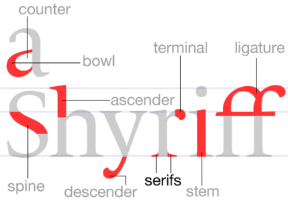

Любопытная
:) @via ffffound!
Еще про шрифт

О! @через ffffound
To The Beat // Jay Haze - Mama Coca (Sis Remix)
Классный трек!
Лучшая отвертка
Самая лучшая отвертка делается из любого хорошего апельсинового сока и этого конкретного ликера.
Антиалиасинг
Всегда делаю такое на каждом новом маке:
defaults -currentHost write -globalDomain AppleFontSmoothing -int 1
Прекрасно изуродованное
and more destroyed apple products
Как-то
Некоторые знают, что после одного жж у меня был другой. Я его давно забросил и использовал только для того, чтобы откаментить иногда что-нибудь у Скавыша.
А сегодня полистал и думаю, что надо бы продолжить.
хинт: жать надо на стрелочки в заголовке )
Consequences

минимал/тек хаус, 60' enjoy ) спасибо Сергуне за картинко )
Skyence – Not Me
И еще.